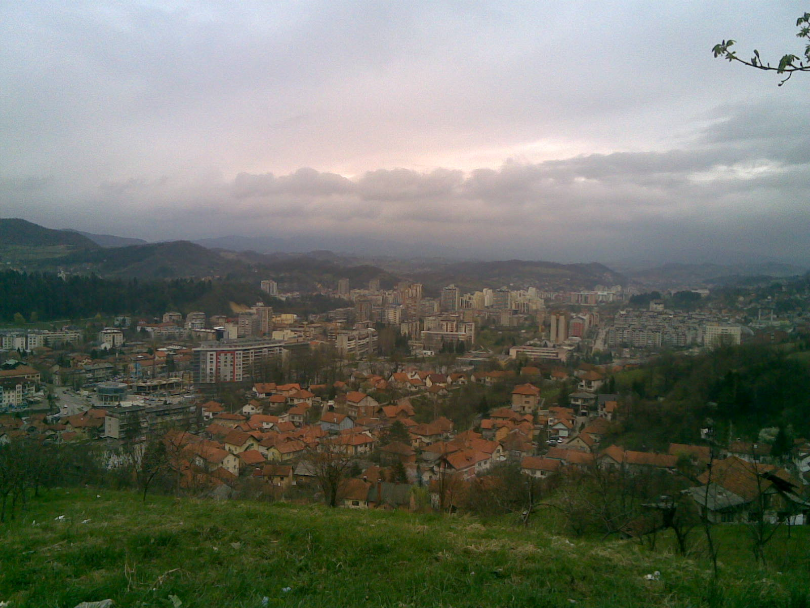

Tražite jeftin apartman u Tuzli, ali ne želite žrtvovati čistoću, lokaciju i osnovni komfor? Dobra vijest je da povoljan smještaj u Tuzli ne mora značiti lošiji boravak. U ovom vodiču objašnjavamo šta zaista utiče na cijenu apartmana, kako uštedjeti na rezervaciji i kako prepoznati povoljan smještaj koji vrijedi svaki uloženi novac.
Koliko koštaju apartmani u Tuzli
Cijene apartmana u Tuzli kreću se u širokom rasponu, ovisno o nekoliko faktora. Apartmani gotovo uvijek nude bolji odnos cijene i prostora od hotela, posebno ako putujete u paru, sa porodicom ili ostajete više noćenja. Uz vlastitu kuhinju i odvojene prostorije, apartman je praktičniji i isplativiji izbor za većinu gostiju koji dolaze u Tuzlu.
Šta utiče na cijenu apartmana
Tri stvari najviše određuju koliko ćete platiti. Prva je sezona: ljetni mjeseci oko Panonskih jezera su najtraženiji, dok je van sezone smještaj osjetno povoljniji. Druga je veličina i broj gostiju, jer veći apartmani logično koštaju više. Treća je ono što je uključeno u cijenu, na primjer parking, internet i komunalije, što kod nekih ponuda dolazi kao dodatak, a kod drugih je već uračunato.

Kako pronaći povoljan a kvalitetan smještaj
Da biste pronašli jeftin apartman u Tuzli koji se isplati, slijedite nekoliko jednostavnih pravila. Birajte termine van glavne sezone kad god možete. Tražite smještaj u kojem su parking i Wi-Fi već uključeni, jer to su troškovi koji se brzo nakupe. Provjerite recenzije na Booking i Airbnb platformama kako biste bili sigurni u čistoću i lokaciju. I, najvažnije, rezervišite direktno kod vlasnika kako biste platili manje.
Zašto je direktna rezervacija jeftinija
Kada rezervišete preko platformi kao što su Booking ili Airbnb, dio cijene odlazi na proviziju, a ta provizija je obično uračunata u ono što vi platite. Direktnom rezervacijom kod vlasnika ta provizija nestaje, pa za istu sobu često dobijete bolju cijenu ili dodatnu fleksibilnost. Zato preporučujemo da prvo provjerite ponudu direktno na sajtu objekta, pa tek onda upoređujete sa platformama.
Povoljni apartmani u Apartmani Elegance
Apartmani Elegance na adresi Donji Mosnik 7 nude 4 tipa apartmana za različite budžete, od povoljnog dvosobnog apartmana idealnog za parove, do prostranijih opcija za porodice i grupe. Svi apartmani dijele istu lokaciju blizu centra i Panonskih jezera, sa besplatnim parkingom i brzim Wi-Fi-em uključenim u cijenu. To znači da povoljniji apartman ne znači lošiju lokaciju, nego samo manju kvadraturu. Više o blizini jezera pročitajte u vodiču o Panonskim jezerima u Tuzli, a ako planirate gdje jesti, pogledajte i pregled najboljih restorana u Tuzli. Rezervišite direktno i platite bez provizije.